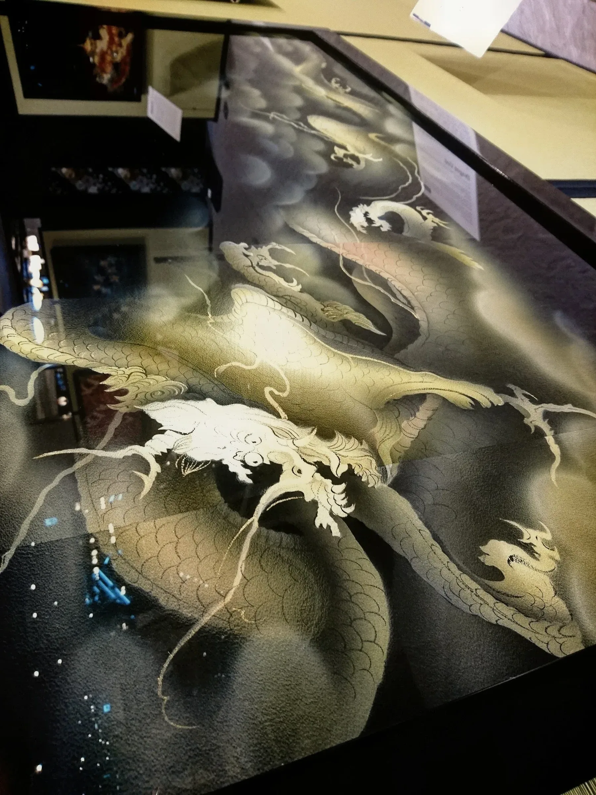
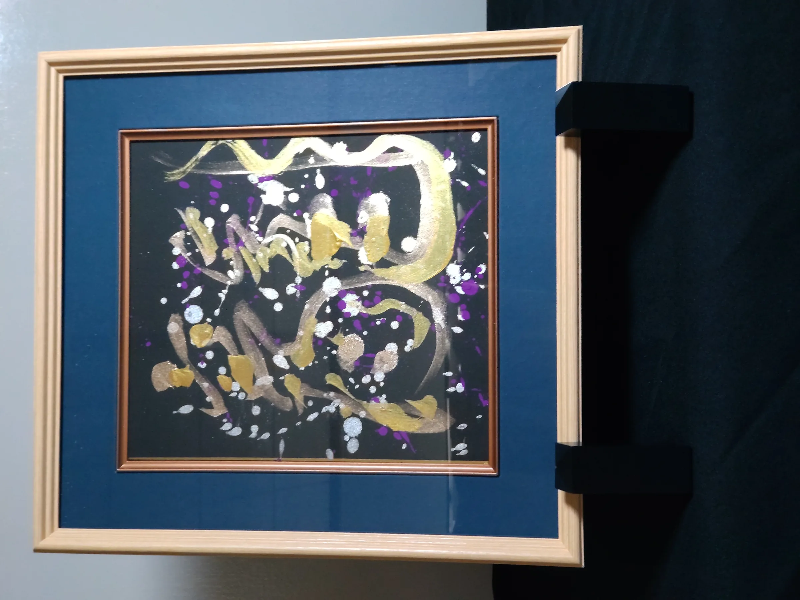
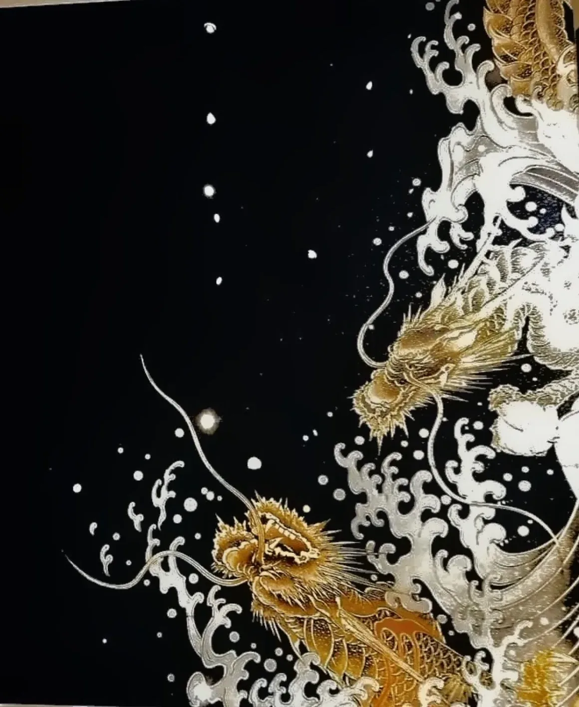

葵孔雀WAGLASS / KIMONO HERITAGE
京友禅や西陣織の記憶を硝子に封じ込める「和硝子」。そして、人の想いや生き方を一筆に凝縮する「書」。横田満康は、日本の伝統を保存するのではなく、現代の空間で再び生きる作品へと変えていきます。
和硝子は、京友禅や西陣織の帯そのものをガラスに封じ込める横田満康の表現です。模様を模倣するのではなく、本物の布が持つ時間、職人技、記憶を作品の中へ残します。


京友禅や西陣織など、実物の日本伝統素材を起点にする。
素材の記憶を残しながら、光と空間の現代作品へ変換する。
素材、構成、光の表情が異なる、コレクターのための唯一の作品。
横田満康本人の公開情報では、京都駅八条口に和硝子8作品が展示されています。海外のコレクターにとって「Kyoto Station」という場所そのものが、作品の来歴と信頼を直感的に伝える強い証拠になります。
画像未設定：京都駅八条口の正式な展示写真は、baes_データからの選定・差し替え待ちです。

建築家として空間を考え、着物デザインを学び、そこから和硝子を生み出した横田満康。2013年から和硝子を本格制作し、作品は京都、名古屋、東京、米国、アジアへと広がってきました。作品を単体で終わらせず「どこに、どう存在させるか」まで考えられることが、横田作品の大きな特徴です。

和硝子とは別に、横田さんは書作品も制作できます。海外向けには単なるJapanese Calligraphyではなく、依頼者の人生、価値観、願いを聞き、横田さんが象徴する一文字を選んで制作する「Personal Kanji Portrait」として設計します。
海外販売では、都市名を単なる経歴一覧にせず、横田作品が日本の外へ渡ってきた物語として見せます。直近では2024年に台湾・台北でも展示・オンライン販売が行われました。
画像未設定：台北展示（2024）の正式写真は、baes_データからの選定・差し替え待ちです。
台北市の店舗で実作品を展示し、QRコードから解説・オンライン購入へつなげるOMO型の販売も実施されています。この経験は、今後の海外サイトと現地展示を接続するモデルとして非常に相性が良いです。
高額作品は、写真だけでなく、素材・サイズ・制作年・一点物であること・来歴・配送条件まで見えて初めて「買える作品」になります。以下は作品詳細ページへの導線イメージです。
作品ごとの物語、使用した着物・帯、光による表情の変化を記載。

完成作品には多角度写真、設置イメージ、真作証明、保険付き国際配送情報を付与。
一点物であることを明記し、作品番号を管理。
署名・落款・真作証明書・作品来歴をセットにする。
梱包、保険、追跡、破損時対応を事前に明示。
高額作品は購入前のオンライン相談・設置相談を用意。
「買う」ボタンだけでは、高額アートの心理には合いません。購入者の温度に合わせて3つの出口を用意します。